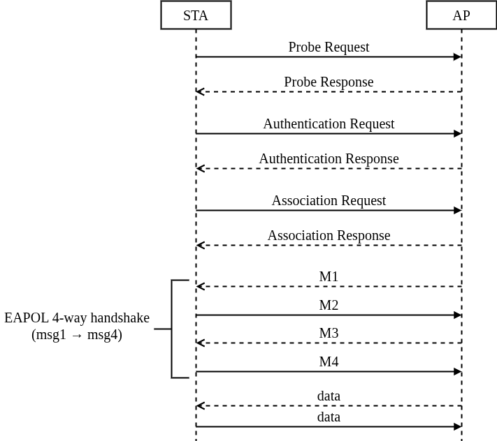

802.11 Frame Types
| Management | Establish and maintain connections | Beacon, Probe, Authentication | Control | Channel access control | ACK, RTS, CTS | Data | Carry user data | Data, QoS Data, Null Data |
|---|
Management Frames
| Beacon | The AP periodically broadcasts SSID, supported capabilities, and time information. | Probe Request/Response | Scan and respond to available SSIDs. | Authentication | Start the authentication process (Open System or Shared Key). | Association Request/Response | Establish a connection between STA and AP after authentication. | Reassociation | STA requests reconnection when roaming through another AP. | Disassociation | Disconnect the logic from the AP. | Deauthentication | Disconnect all connections (logical and security). | Action | Used for advanced functions such as BSS Transition Management (BTM), Radio Measurement, Block ACK, Fast Transition (FT)… |
|---|
Control Frames
| ACK | Successful response to a received message. | RTS (Request to Send) | It is recommended to reserve the line in advance to avoid conflicts. | CTS (Clear to Send) | Response to RTS, allowing data to be sent. | Block ACK Request/Response | Batch QoS packet validation. | RPS-Poll | The STA tells the AP that it is awake and wants to receive data. |
|---|
Data Frames
| Data | Packet containing user payload (TCP/IP, etc.) | QoS Data | Data packet with priority information (WMM - voice/video). | Null Data | The packet has no payload, just to indicate the status (sleep/awake). | QoS Null | Like Null Data, but with QoS support. |
|---|
Security related news (WPA/WPA2/WPA3)
| EAPOL-Key Frames | 4 ways to use WPA/WPA2 handshake (msg1–msg4) | SAE Commit/Confirm | WPA3-Personal replaces PSK, prevents offline dictionary attack | PMF (Protected Management Frames) | Used to encrypt messages such as Deauth/Disassoc |
|---|
Wi-Fi connection

Common Errors in 4-Way Handshake
| MIC Different | PMK mismatch (wrong PSK) or Packet modified or corrupted | Timeout MSG1 | STA not responding → driver error, weak signal, STA does not support standard | Replay Counter mismatch | STA/AP using different Replay Counter values → software error or attack | Handshake Loop (retry MSG1) | STA returns Msg2 with wrong MIC multiple times → AP retry → loop |
|---|
WPA2 vs WPA3
| Characteristic | WPA2 | WPA3 | Source PMK | PSK (Pre-Shared Key) or 802.1X | SAE (Simultaneous Authentication of Equals) | Security capabilities | Weak with weak PSK, vulnerable to offline attacks | Cannot brute-force offline | Handshake | 4-way EAPOL | SAE → 4-way (like WPA2, after authentication) |
|---|
Wireshark Message
802.11 Messages with WiresharkDynamic Frequency Selection (DFS)
Dynamic Frequency Selection (DFS) is a channel allocation scheme specified for wireless LANs, commonly known as Wi-Fi. It is designed to prevent electromagnetic interference by avoiding co-channel operation with systems that predated Wi-Fi, such as military radar, satellite communication, and weather radar, and also to provide on aggregate a near-uniform loading of the spectrum (uniform spreading).[1] It was standardized in 2003 as part of IEEE 802.11h.
Radar detection mechanism
When starting operation, an access point automatically selects channels with low interference levels in a phase known as Channel Availability Check (CAC). During this phase, the access point is in a passive state scanning for radar signals. This commonly takes one to two minutes, but could take up to ten minutes. Thereafter, the access point performs In-Service Monitoring (ISM) to detect active radar signals; if radar is detected, and the access point is configured to automatically select a channel, it broadcasts a switch-channel event to its clients and follows by switching the channel. The actual mechanism, durations, radar pulse pattern, power levels, and frequency bands on which DFS is enforced vary by jurisdiction. DFS is mandated for the 5470–5725 MHz U-NII band in United States by the FCC. DFS is mandatory for the 5250–5350 and 5470–5725 MHz bands in India.
Weather radar interference
Prior to the introduction of Wi-Fi, one of the biggest applications of the 5 GHz band was Terminal Doppler Weather Radar. The decision to use 5 GHz spectrum for Wi-Fi was finalized in the World Radiocommunication Conference in 2003; however, the meteorological community was not involved in the process. Implementation and configuration problems caused significant disruption in weather radar operations in countries around the world. In Hungary, the weather radar system was declared non-operational for more than a month. Due to the severity of interference, South African weather services ended up abandoning C band operation, switching their radar network to S band.
Modulation and Coding Scheme (MCS)
A Modulation and Coding Scheme (MCS) is a method used in wireless communication to determine how data is transmitted. It combines modulation techniques and coding rates to balance data rate and reliability based on channel conditions. MCS is a crucial metric in Wi-Fi and cellular networks, impacting performance and efficiency.
MCS Table (HT/VHT/HE) - MCSINDEX.NETClear Channel Assessment (CCA)
Clear Channel Assessment (CCA) is a mechanism used in Wi-Fi (IEEE 802.11) to determine whether the wireless channel is idle or busy before a device attempts to transmit data. It is a core part of the Carrier Sense Multiple Access with Collision Avoidance (CSMA/CA) protocol.
CCA operates in two main modes:
Energy Detection (ED)
Measures the total energy (signal strength) on the channel.
If the energy level exceeds a defined ED Threshold, the channel is considered busy.
Detects both Wi-Fi and non-Wi-Fi signals (e.g., microwave ovens, Bluetooth).
Carrier Sense (CS)
Looks for valid 802.11 preambles or headers.
If a valid Wi-Fi signal is detected, the channel is marked busy.
Important Parameters
| ED Threshold (EDCCA) | The energy level above which the channel is considered busy | CCA Busy Fraction / Air Time | The percentage of time the channel is busy | Clear Channel Time | Minimum idle time required before transmitting |
|---|
Practical Use Cases
Wi-Fi Channel Optimization: Choosing channels with lower CCA busy rates improves performance.
RF Calibration: Setting the ED threshold correctly helps avoid false positives or missed transmissions.
Network Performance Monitoring: High CCA busy time often means poor throughput or high interference.